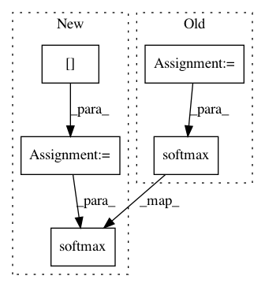

d3795d6cd1c66ac05dc0f4861ce69ab4680bff3d,fairseq/models/fairseq_decoder.py,FairseqDecoder,get_normalized_probs,#FairseqDecoder#Any#Any#,22
Before Change
def get_normalized_probs(self, net_output, log_probs):
Get normalized probabilities (or log probs) from a net"s output.
vocab = net_output.size(-1)
net_output1 = net_output.view(-1, vocab)
if log_probs:
return F.log_softmax(net_output1, dim=1).view_as(net_output)
else:
return F.softmax(net_output1, dim=1).view_as(net_output)
def max_positions(self):
Maximum input length supported by the decoder.
After Change
def get_normalized_probs(self, net_output, log_probs):
Get normalized probabilities (or log probs) from a net"s output.
logits = net_output[0]
if log_probs:
return F.log_softmax(logits, dim=-1)
else:
return F.softmax(logits, dim=-1)
def max_positions(self):
Maximum input length supported by the decoder.
raise NotImplementedError
In pattern: SUPERPATTERN
Frequency: 4
Non-data size: 5
Instances
Project Name: elbayadm/attn2d
Commit Name: d3795d6cd1c66ac05dc0f4861ce69ab4680bff3d
Time: 2018-04-02
Author: myleott@fb.com
File Name: fairseq/models/fairseq_decoder.py
Class Name: FairseqDecoder
Method Name: get_normalized_probs
Project Name: tensorlayer/tensorlayer
Commit Name: 13ed139f539684bf39919963241bf37ab2967d77
Time: 2019-04-23
Author: rundi_wu@pku.edu.cn
File Name: examples/pretrained_cnn/tutorial_models_mobilenetv1.py
Class Name:
Method Name:
Project Name: tensorlayer/tensorlayer
Commit Name: 301f593e6d80712315ec965996cdccb9a20b54c0
Time: 2019-04-24
Author: rundi_wu@pku.edu.cn
File Name: examples/pretrained_cnn/tutorial_models_squeezenetv1.py
Class Name:
Method Name: